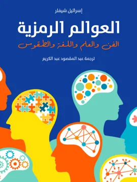

العوالم الرمزية: الفن والعلم واللغة والطقوس

قراءة عربية أصلية محددة النطاق في الصفحات 13، 16 من ملف PDF المرتبط، وليست تلخيصا كاملا للكتاب. نناقش ما تدعمه هذه المقاطع فقط.
الإنسان حيوان رمزي لا عقلاني فقط
يحدد الفصل الأول «مقدمة وخلفية» مشروع الكتاب: استكشاف سمات ووظيفة الرمز في اللغة والعلم والفن والطقوس واللعب وتشكيل الرؤى المختلفة للعالم، مع إعادة صياغة تيمات من أعمال المؤلف السابقة. يستعيد شيفلر مرجعياته: كتابه «أربعة براجماتيين» عن بيرس ووليم جيمس وميد وجون ديوي، و«عن الإمكانيات الإنسانية» عن التعليم، ثم تعريف إرنست كاسيرر للإنسان بأنه حيوان رمزي لا عقلاني، وكتاب نيلسون جودمان الرائد «لغات الفن» الذي وسّع إشارة النظم الرمزية إلى ما بعد اللغة. ويؤكد أن العوالم الرمزية تشمل العلوم والفنون والطقوس الدينية ولعب الأطفال، لا الوصف الأدبي فقط، مع أمثلة إدراكية كصورة «البطة الأرنب» ومكعب نيكر.
زاوية وحدود القراءة
قراءة في الفصل الأول «مقدمة وخلفية» من الصفحات 13 إلى 16، لا في فصول الكتاب كاملة. المرجعيات (بيرس، جيمس، ميد، ديوي، كاسيرر، جودمان) وأمثلة البطة الأرنب ومكعب نيكر من نص الفصل المقروء نفسه، والهوامش التعريفية بهم من عمل المترجم. لا نعرض هنا حجاج الفصول اللاحقة عن الفن والعلم واللغة والطقوس.
الطبعة والقراءة
هذه النسخة من الكتاب صادرة ومتاحة مجانًا بموجب اتفاق قانوني بين مؤسسة هنداوي والسيد الدكتور عبد المقصود عبد الكريم.
تنزيل PDF المجاني ↓ القراءة والمصدر الرسمي ↗